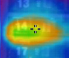
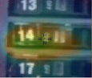

Mit einem berührungslos messenden IR-Thermometer bleiben Sie in einem sicheren Abstand von dem Objekt und erhalten dennoch genaueste Messwerte in einem breiten Temperaturbereich, daher die Bezeichnung "berührungslos".
IR-Handthermometer sind für die sofortige Messung der Temperatur in schwierig zu erreichenden Bereichen vorgesehen, die nur über eine Leiter zugänglich sind oder in denen sich heiße Objekte befinden, in denen sich die Temperatur schnell ändert, die unter Strom stehen oder die durch sonstige Gefahren gekennzeichnet sind (z. B. Hochspannung). In rauen Umgebungen, in denen fest installierte oder Kontaktthermometer Ihre Anforderungen nicht erfüllen können, ist ein IR-Thermometer von Fluke die bessere Lösung. Die IR-Thermometer von Fluke verwenden einen besonders hellen Laser, mit dessen Hilfe das Thermometer auf das jeweilige Objekt gerichtet wird, damit Sie die richtige Temperatur in einem möglichst sicheren Abstand ablesen können. Daher rührt die Bezeichnung "Laser-Thermometer".
Visuelle IR-Thermometer sind Tools zur Fehlersuche mit einer IR-Wärmekarte. Sie überbrücken die Lücke zwischen den günstigeren IR-Thermometern und teureren Wärmebildkameras und ermöglichen es den Anwendern, zu sehen, was sich hinter der Temperatur verbirgt. Sie erhalten das komplette Bild mit einer überblendeten visuellen und thermischen Abbildung Ihres Zielbereichs, statt mühsam mehrere einzelne Temperaturmessungen vorzunehmen und aufzuzeichnen.
| | | |
|  |  |  |
| 75 % Überblendetes Bild | 50 % Überblendetes Bild | 25% Überblendetes Bild |
Fluke bietet außerdem zahlreiche Kontaktthermometer und sämtliches Zubehör für diese Modelle. Wenn Ihre Anwendungen die Genauigkeit eines Laborgeräts (0,05 % +0,3 °C) und eine kurze Messzeit erfordern, sind die robusten Kontaktthermometer der Fluke-Serie 50 die richtige Wahl.
Fluke bietet Ihnen das richtige Messgerät für Ihre Anforderungen, unabhängig davon, ob Sie ein Kontakt-, ein berührungsloses Thermometer oder eine Kombination aus beiden benötigen.